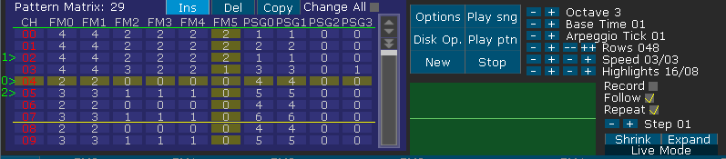

·
Live Mode: 3 basic points, Loop start, Loop end and next in queue.
When you press the "Track Mode" button or Ctrl+E, you will change the current DefleMask's mode.
In Live Mode you can set Loop points in the pattern matrix. With Left Mouse Button you could set the start loop point (the Green Line) and with Right Mouse Button you will set the end loop point (the Red Line).
If you press the Middle Mouse Button the current pattern will be setted as Start Loop Point and as the End Loop Point, making that specific pattern to loop.
After that, the song will start to loop over and over again, until you change the loop form, stop the song or clear the loop points.
To clear the loop points there is a keyboard shortcut, Ctrl+C. Ctrl+C (copy) is replaced by Clear Loop Points while in Live Mode.
While looping or while playing normally, you can queue a new pattern by pressing Shift+Left Mouse Button (the Green Arrow on the left side). That arrow will define that after the end of the current sounding pattern, the playing cursor will be moved to that specific position.
You can queue repeatedly one after the other to control the song structure.
To remove the latest node in the queue, you have to press Shift+Right Mouse Button, and in order to clear completely the queue you should press Ctrl+Shift+C.
A very useful technic is to make generic and independent pattern frames and queue them manually during a Live Session.
Another interesting feature to use in the Live Mode is the Mute Channel Keyboard Shortcut, you can press Ctrl+1/2/3/4/etc to dinamically mute the channels.